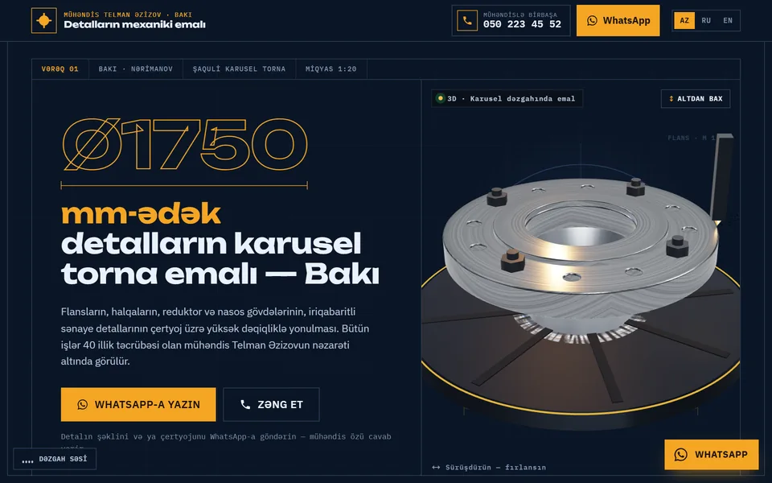
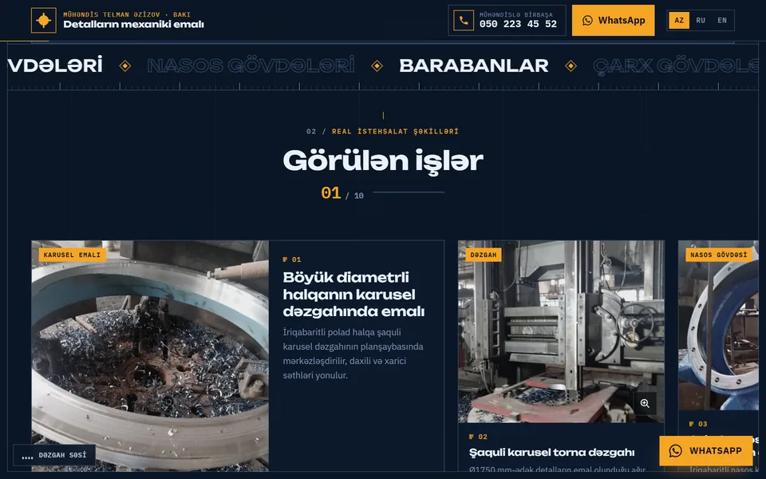
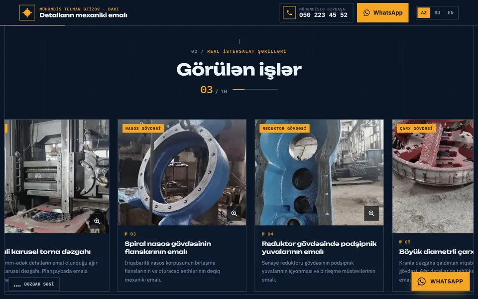

Karusel torna emalıVertical lathe machiningКарусельная токарная обработка
Mühəndis Telman Əzizovun Bakıdakı karusel torna emalı sexi üçün sayt: fırladıla bilən 3D flans modeli, real istehsalat şəkilləri və birbaşa WhatsApp sifarişi.
A website for engineer Telman Azizov's vertical lathe workshop in Baku, with a rotatable 3D flange, real workshop photos and direct WhatsApp ordering.
Сайт для цеха карусельной токарной обработки инженера Тельмана Азизова в Баку: вращаемый 3D-фланец, реальные фото цеха и заказ напрямую через WhatsApp.



Bu sayt mühəndis Telman Əzizovun Bakıdakı karusel torna emalı sexi üçün hazırlanıb. Sex diametri 1750 mm-ə qədər olan iri sənaye detallarını emal edir: flanslar, halqalar, reduktor və nasos gövdələri, barabanlar, çarx gövdələri, plitələr və çertyoj üzrə işlər.
Saytda texniki çertyoj üslubunda dizayn, fırladıla bilən 3D flans modeli, real istehsalat şəkilləri qalereyası, hər xidmət üçün ayrıca səhifə, ünvan, xəritə və birbaşa WhatsApp sifarişi var. Google axtarışı üçün optimallaşdırılıb.
This site was built for engineer Telman Azizov's vertical lathe (carousel) workshop in Baku. The workshop machines large industrial parts up to 1,750 mm in diameter: flanges, rings, gearbox and pump housings, drums, wheel bodies, plates and parts made from drawings.
It has a technical-drawing look, a rotatable 3D flange model, a gallery of real workshop photos, a page for each service, address and map, and direct WhatsApp ordering. It is optimised for Google search.
Этот сайт сделан для цеха карусельной токарной обработки инженера Тельмана Азизова в Баку. Цех обрабатывает крупные промышленные детали диаметром до 1 750 мм: фланцы, кольца, корпуса редукторов и насосов, барабаны, колёсные центры, плиты и детали по чертежам.
Стиль технического чертежа, вращаемая 3D-модель фланца, галерея реальных фото цеха, отдельная страница для каждой услуги, адрес и карта, заказ напрямую через WhatsApp. Сайт оптимизирован для поиска Google.
- 3D model: sürüşdürəndə fırlanan flans, "altdan bax" rejimi.
- Görülən işlər: 10 real istehsalat şəkli, böyüdülə bilən.
- Dillər: Azərbaycan, rus, ingilis.
- 3D model: a flange you spin by dragging, with a "view from below" mode.
- Past work: 10 real workshop photos you can zoom.
- Languages: Azerbaijani, Russian, English.
- 3D-модель: фланец, который можно вращать мышью или пальцем, с режимом «вид снизу».
- Выполненные работы: 10 реальных фото цеха с увеличением.
- Языки: азербайджанский, русский, английский.